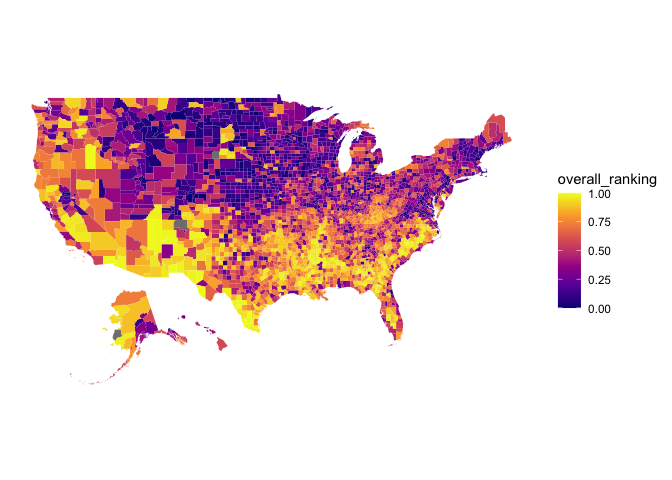

#————————- UNDER CONSTRUCTION ————————#
The goal of the MSVI package is to provide researchers and analysts with health and socioeconomic data at the state, metropolitan or county-level.
The MSVI package contains:
ahrf: data provided by the Area Health Resources Files (AHRF) which include the counts of health care professions at the county-level from over 50 data sources. (Source: https://data.hrsa.gov/topics/health-workforce/ahrf)cms: data from the Centers for Medicare & Medicaid Services on health outcomes and utilization. (Source: https://data.cms.gov/mapping-medicare-disparities)county_health_rankings: data provided by The County Health Rankings & Roadmaps program on health outcomes and health factors. (Source: https://www.countyhealthrankings.org/explore-health-rankings/measures-data-sources/2020-measures)definitive_hc: data on typical bed capacity and average yearly bed utilization of hospitals across the United States provided by Definitive Healthcare. (Source: https://coronavirus-resources.esri.com/datasets/)svi_ranking: the Centers for Disease Control and Prevention (CDC)’s Social Vulnerability Index (SVI) which ranks counties on 15 social factors, including unemployment, minority status, and disability, and further groups them into four related themes. SVI was calculated for metropolitan statistical area’s and added to svi_ranking.rds. (Source for county-level data: https://www.atsdr.cdc.gov/placeandhealth/svi/index.html)You can install the development version from GitHub with:
# install.packages("devtools") devtools::install_github("asmae-toumi/MSVI")
View raw clinician rate and clinician rate per 100,000 people at the state and county level by type of clinician.
The CMS data contains all-cause hospitalizations, all-cause readmissions, overall and composite PQI (Prevention Quality Index) and all emergency visits by county and state.
cms %>% filter(condition == "All Emergency Department Visits") %>% group_by(county, ) %>% summarize(total_ED = sum(analysis_value)) %>% top_n(5) #> # A tibble: 5 x 2 #> county total_ED #> <chr> <dbl> #> 1 Franklin County 17283 #> 2 Jackson County 16234 #> 3 Jefferson County 18103 #> 4 Lincoln County 15529 #> 5 Washington County 20706
Social Vulnerability Index
CDC developed the SVI to “help public health officials and emergency response planners identify and map the communities that will most likely need support before, during, and after a hazardous event.”. It ranks counties vulnerability by the following themes: socioeconomic status, household Composition & disability, minority status & language, housing type & transportation, and an overall ranking.
